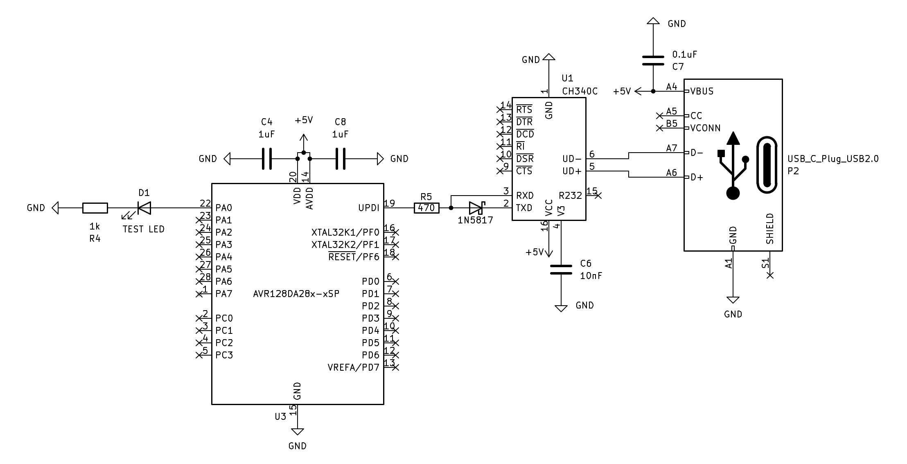

Este es una forma de hacer un blink con un efecto de encendido y apagado suave y transitorio, es bonito y relajante. Para lograrlo, debemos hacer uso del timer/counter que genera una frecuencia de tipo PWM (Pulse Width Modulation) y es más complejo que él ejemplo anterior pero es una base esencial para hacer muchas más cosas.

Cómo dato curioso, el PWM entre las múltiples utilidades que tiene, se usa en las linternas o lámparas con bombillas LED para ahorrar energía o controlar el nivel de luminosidad.
Los siguientes ejemplos no hacen uso del mismo pin que tratamos en este ejemplo del blink porque el timer/counter A (TCA) no tiene acceso al pin PA6, pero sí al PA0 entre otros.
1
2
3
4
5
6
7
8
9
10
11
12
13
14
15
16
17
18
19
20
21
22
23
24
25
26
27
28
29
30
31
32
33
#include <avr/io.h>
#include <stdbool.h>
#include <util/delay.h>
int main (void ) {
uint8_t pwm = 0x00 ;
bool up = true ;
// Configure internal clock:
= CCP_IOREG_gc; // Disable Configuration Change Protected register.
= CLKCTRL_FRQSEL_24M_gc; // Configure to 24Mhz.
// Configure LED on PA0:
= PIN0_bm;
// Select mode Single Slope PWM:
= TCA_SINGLE_WGMODE_SINGLESLOPE_gc | TCA_SINGLE_CMP0EN_bm;
TCA0.SINGLE.PER = 255 ; // 8 bits (0..255)
= 0 ; // Duty cycle initial (off)
= TCA_SINGLE_CLKSEL_DIV64_gc | TCA_SINGLE_ENABLE_bm;
while (1 ) {
TCA0.SINGLE.CMP0 = pwm;
pwm += up ? 1 : - 1 ;
if (pwm == 0xff )
up = false ;
else if (pwm == 0x00 )
up = true ;
_delay_ms (10 );
}
}
$$ f_{PWM}=\frac{f_{CPU}}{prescaler \cdot (PER + 1)}=\frac{24000000}{64 \cdot (255 + 1)}=1464_{Hz} $$
Aquí se hace uso de las interrupciones.
1
2
3
4
5
6
7
8
9
10
11
12
13
14
15
16
17
18
19
20
21
22
23
24
25
26
27
28
29
30
31
32
33
34
35
36
37
38
#include <avr/interrupt.h>
#include <avr/io.h>
#include <stdbool.h>
#include <stdint.h>
static volatile uint8_t pwm = 0 ;
static volatile bool up = true ;
ISR (TCA0_OVF_vect){
pwm += up ? 1 : - 1 ;
if (pwm == 0xff )
up = false ;
else if (pwm == 0x00 )
up = true ;
TCA0.SINGLE.CMP0 = pwm;
TCA0.SINGLE.INTFLAGS = TCA_SINGLE_OVF_bm;
}
int main (void ){
// Configure internal clock:
= CCP_IOREG_gc; // Disable Configuration Change Protected register.
= CLKCTRL_FRQSEL_24M_gc; // Configure to 24Mhz.
// Configure LED on PA0:
= PIN0_bm;
// Configuramos el PWM:
= TCA_SINGLE_WGMODE_SINGLESLOPE_gc | TCA_SINGLE_CMP0EN_bm;
TCA0.SINGLE.PER = 255 ; // 8 bits (0..255)
= 0 ; // Start from 0
= TCA_SINGLE_OVF_bm; // Enable OVF
= TCA_SINGLE_CLKSEL_DIV64_gc | TCA_SINGLE_ENABLE_bm;
sei ();
while (1 ){}
}
Compilar y subirlo
Para compilarlo deberá ejecutar el siguiente comando:
1
2
3
4
avr-gcc -mmcu= avr128da28 \
= 24000000UL \
= gnu99 -Wall -o main.elf *.c
avr-objcopy -O ihex main.elf main.hex
Para subir el programa al microcontrolador, deberá ejecutar el siguiente comando:
1
avrdude -c serialupdi -p avr128da28 -P /dev/tty.usbserial-2110 -e -F
Si todo fue bien, podrá disfrutar del led.